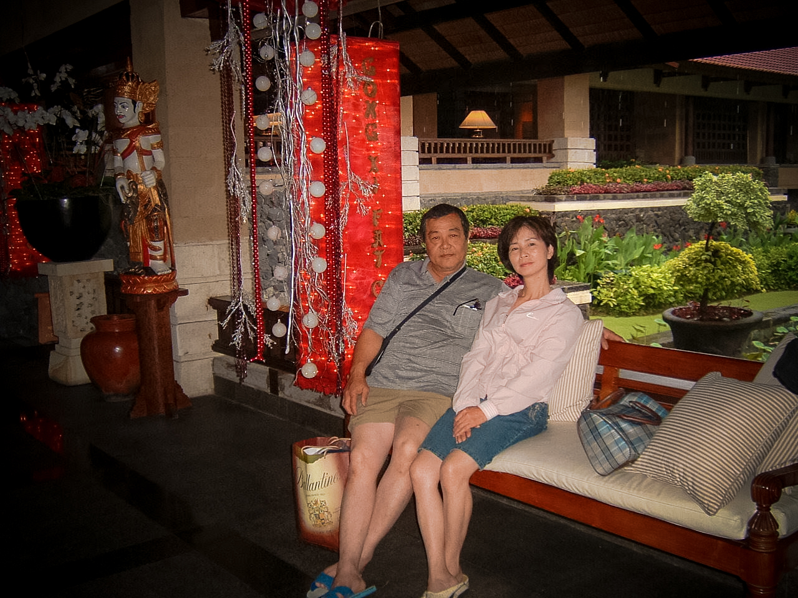

農曆年出國旅
全家再次一同出國旅遊，選在農曆年，小妹無法跟。
當時感覺峇厘島和泰國差不多，海島、溯溪以及搭遊艇去玩海上活動。
一下飛機就被掛上花圈似乎是當年東南亞旅遊的標配?
旅途中還發生了一段小插曲——確認了我和 SG 居然是「東南亞小姐姐們的菜」XD，被一群學生妹圍著拍照~哈
當年的畫質雖然「慘不忍睹」，但那些片段卻仍然清晰。峇里島的陽光、海風、笑聲，依舊在回憶裡熱鬧著。
# 峇里島回憶
# 農曆年旅行
# 家族出遊
-
一落地就掛花圈，度假模式 ON。
# 巴里島 伍拉賴國際機場 DPS
-
露台吹風，比耶打卡兩連拍。
# 巴里島 烏布 Ubud 木亭露台
-
沙灘集合！海上活動準備開玩！
# 巴里島 丹戎伯諾亞海灘 Tanjung Benoa
- 
爸媽在飯店大廳小憩，南洋味滿到天花板。
# 巴里島 努沙杜瓦 Nusa Dua 度假村大廳
-

老媽穿上紗籠，秒變在地人～
# 巴里島 蜡染／紗籠工坊 Batik Shop
-
老爸氣定神閒做在浪花拍岸的海神廟前，超有氣勢。
# 巴里島 海神廟 Tanah Lot
-
石門一分為二，走進海邊神話。
# 巴里島 海神廟 Tanah Lot 山門
-
躺沙發放空，假期就是要耍廢。
# 巴里島 Villa 別墅客廳
-
villa 看起來很厲害~
# 巴里島 Villa 別墅起居室
-
在 Desamuda Village 打卡！
# 印尼 峇里島 Seminyak・Desamuda Village
-
巨型迦樓羅鎮守大廳，英氣滿滿！
# 印尼 峇里島 GWK Garuda Wisnu Kencana 文化公園
-
和團員來一張大合照～
# 印尼 峇里島 Seminyak・Desamuda Village